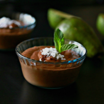

1.Čokoladna pena sa avokadom i narom
Sastojci
2 zrela avokada srednje veličine
2 zrele banane
2 kašika ekstra devičanskog kokosovog ulja
8 kašika kakao praha
2 kašike javorovog sirupa
200ml kokosovog mleka
malo soli
Priprema recepta
Avokado presecite na pola, odstranite semenku i kaškom odvojte sredinu od
kore i stavite u eletričnu seckalicu. Dodajte banane, kokosovo ulje, kakao prah,
javorov sirup, kokosovo mleko i malo soli i miksajte dok se ne dobije penasta masa. Ako je potrebno, zaustavite seckalicu jednom ili dvaput pa špatulom skinite i promešajte delove smese ako su se zalepili za zid seckalice. Kada se dobro umuti i dobije penasta masa, prespite u posude za posluživanje i smestite u zamrzivač na 30 minuta, a zatim premestite u frižider.
Kada je ohlađeno, pospite semenkama nara ili bobičastim voćem po izboru.

2.Palačinke sa brašnom od heljde
Sastojci
ZA TESTO:
1 šolja integralnog brašna od pšenice
1 šolja brašna od heljde
2 kašičice praška za pecivo
1/4 kašičice soli
2 šolje bademovog mleka (ili više ukoliko procenite da je potrebno)
2 jajeta
1 kašika otopljenog kokosovog ulja + ulje za podmazivanje
1 kašičica javorovog sirupa
ZA PRELIV:
2 šolje smrznutog bobičastog voća
1 kašika vode
1 kašika javorovog sirupa (po želji)
1/4 šolje slatke pavlake
ZA TESTO:
1 šolja integralnog brašna od pšenice
1 šolja brašna od heljde
2 kašičice praška za pecivo
1/4 kašičice soli
2 šolje bademovog mleka (ili više ukoliko procenite da je potrebno)
2 jajeta
1 kašika otopljenog kokosovog ulja + ulje za podmazivanje
1 kašičica javorovog sirupa
ZA PRELIV:
2 šolje smrznutog bobičastog voća
1 kašika vode
1 kašika javorovog sirupa (po želji)
1/4 šolje slatke pavlake
Priprema recepta
Umutite jaja, bademovo mleko, kokosovo ulje i javorov sirup. Posebno pomešajte heljdino, pšenično integralno brašno, prašak za pecivo i so, pa suve sastojke dodajte tečnim dok se ne sjedine. Testo treba da bude gušće nego za obične palačinke, a prema potrebi dodajte još mleka.
Na vrelom tiganju koji je premazan tankim slojem kokosovog ulja uspite
testo za palačinke, tako da promer palačinke bude 10-12cm. (Ove palačinke su deblje i manje nego one domaće koje smo navikli da pravimo). Okrenite palačinku kada ivice postanu smeđe i kada se u sredini pojave mehurići (ako se mehurići ne pojave, možda treba dodati još mleka, ili se smesa predugo mutila).
Kada je okrenuta palačinka pečena, nastavite sa sledećom.